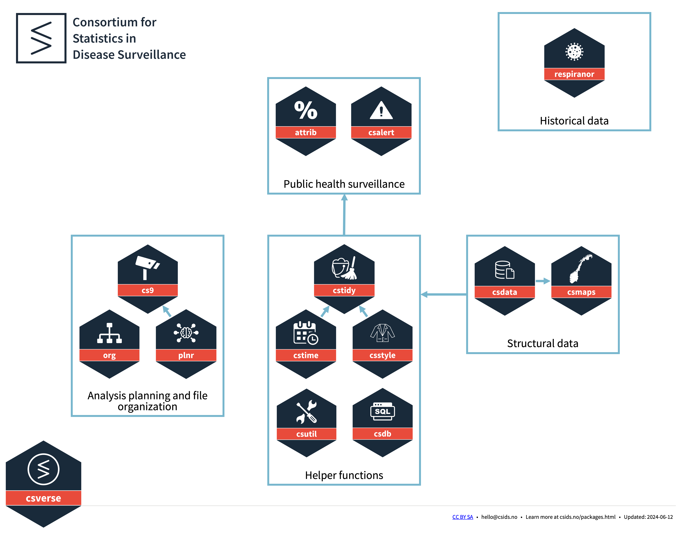
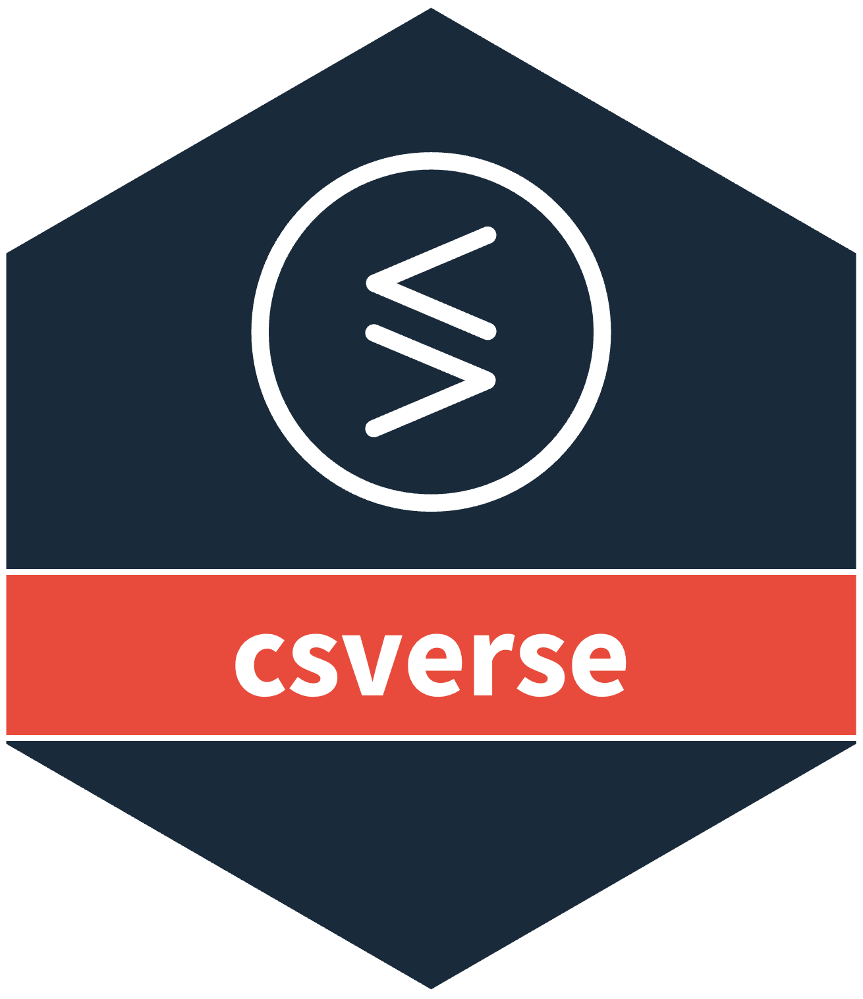
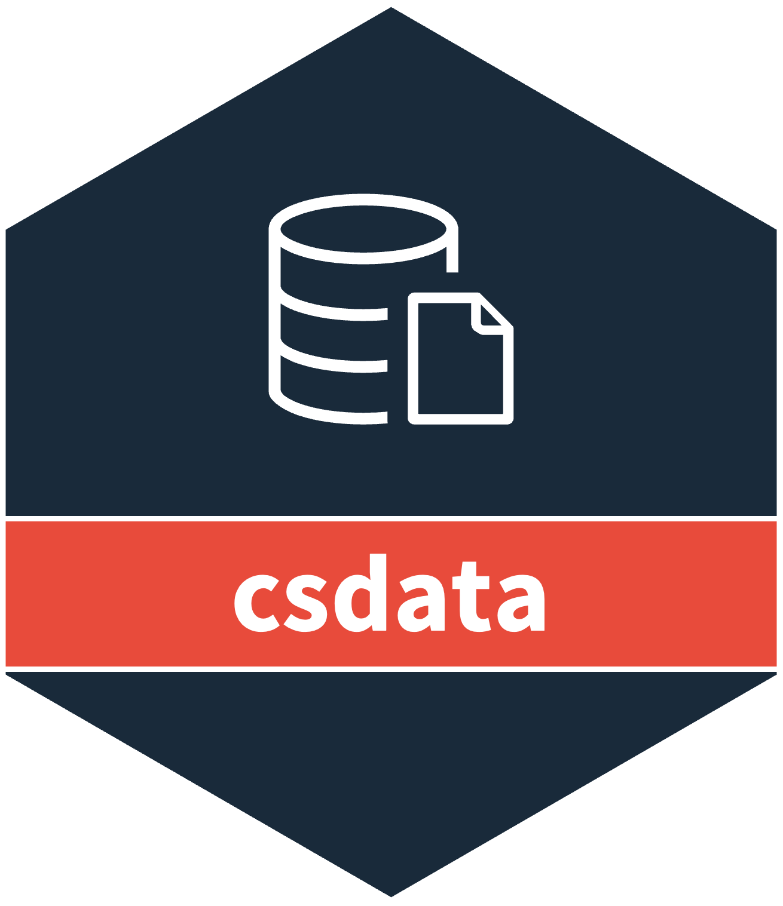
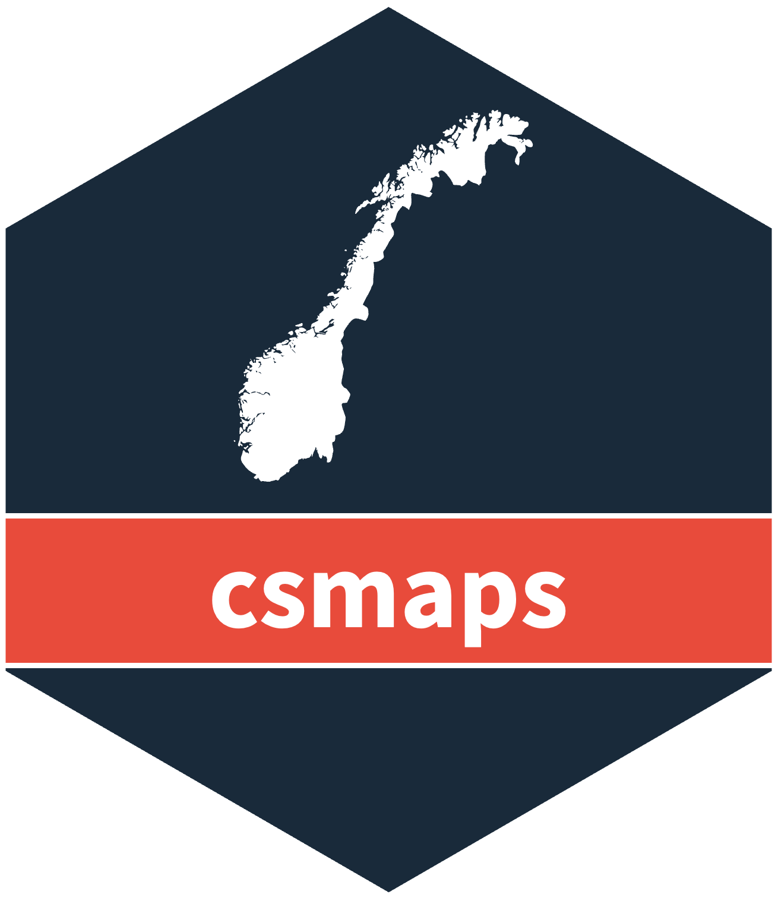
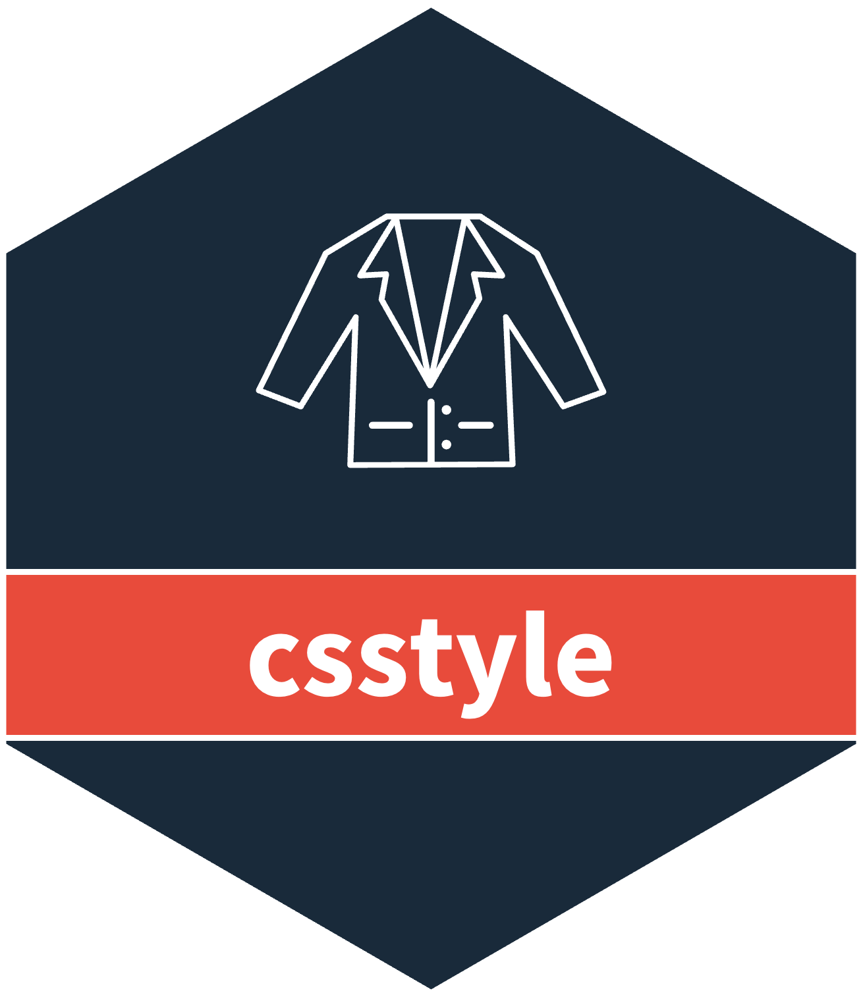
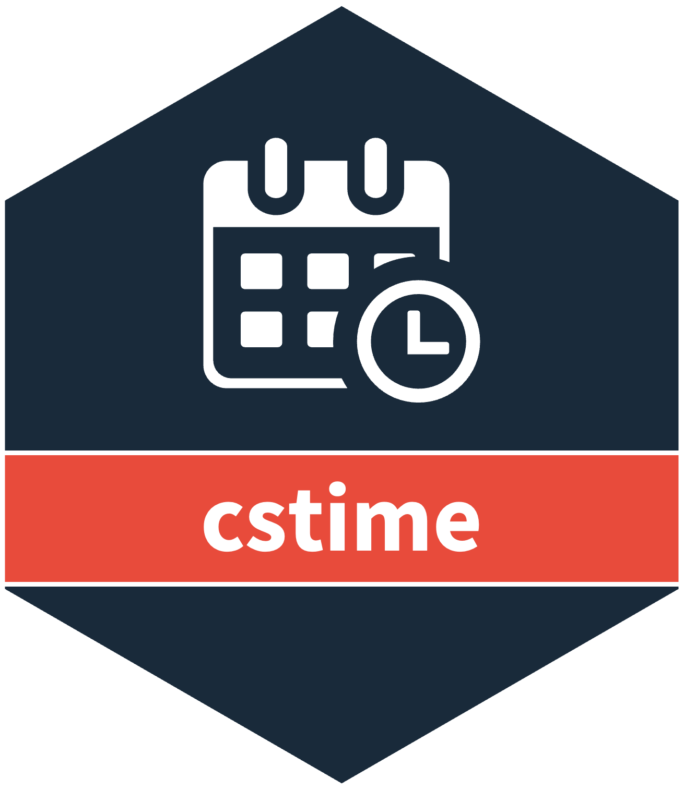

Installation and Use

If you want to install the dev versions (or access packages that haven’t been released on CRAN), run usethis::edit_r_profile() to edit your .Rprofile.
Then write in:
options(
repos = structure(c(
csverse = "https://www.csids.no/drat/",
CRAN = "https://cran.rstudio.com"
))
)Save the file and restart R.
You can now install csverse packages from our drat repository.
The csverse

attrib provides functions for estimating the attributable burden of disease due to risk factors.

csalert helps create alerts from public health surveillance data.

csdata contains datasets relating to population in municipalities, municipality/county matching, and how different municipalities have merged/redistricted over time from 2006 to 2020.

csdb provides an abstracted system for easily working with databases with large datasets.

csmaps contains preformatted maps of Norway that don’t need geolibraries.

csstyle is a system for standardizing outputs (e.g. graphs, tables, reports). The standard tools for producing output are too flexible, allowing for too much variation and making it difficult to produce consistent outputs. This package focuses on producing a few limited outputs that consistently look the same.

cstidy contains helpful functions for cleaning data.

cstime contains helpful functions for working with time.

csutil contains utility functions that help with common base-R problems relating to lists. Lists in base-R are very flexible. This package provides functions to quickly and easily characterize types of lists. That is, to identify if all elements in a list are null, data.frames, lists, or fully named lists. Other functionality is provided for the handling of lists, such as the easy splitting of lists into equally sized groups, and the unnesting of data.frames within fully named lists.

nowcast helps you predict the present.
org is system to help you organize projects. Most analyses have three (or more) main sections: code, results, and data, each with different requirements (version control/sharing/encryption). You provide folder locations and ‘org’ helps you take care of the details.

plnr is system to plan analyses within the mental model where you have one (or more) datasets and want to run either A) the same function multiple times with different arguments, or B) multiple functions. This is appropriate when you have multiple strata (e.g. locations, age groups) that you want to apply the same function to, or you have multiple variables (e.g. exposures) that you want to apply the same statistical method to, or when you are creating the output for a report and you need multiple different tables or graphs.